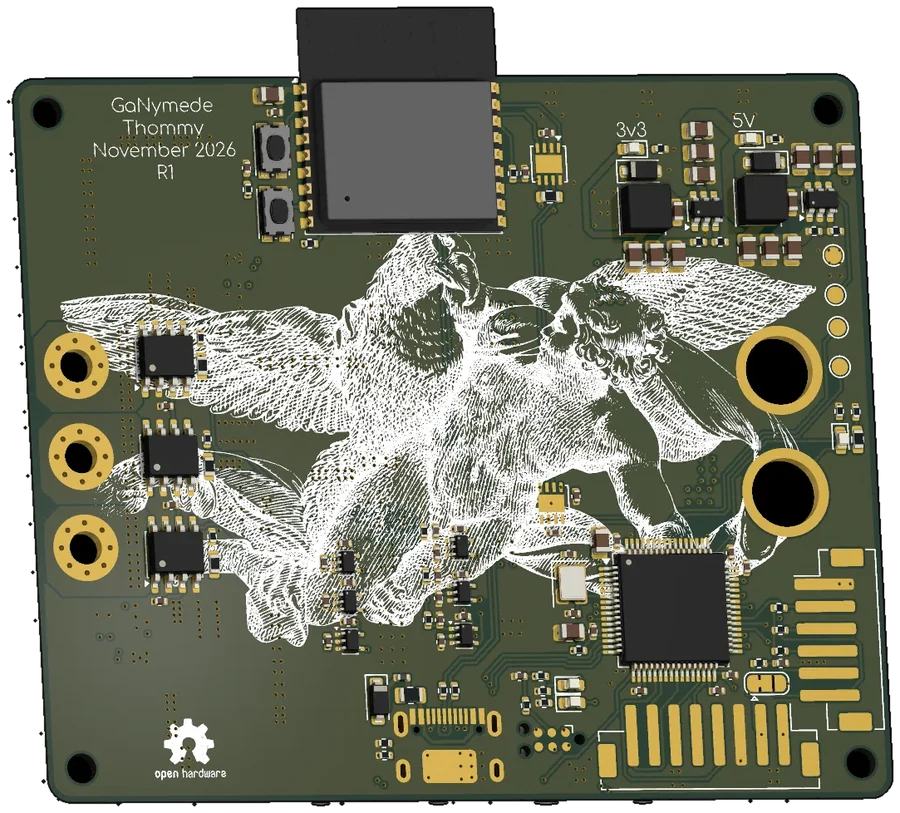
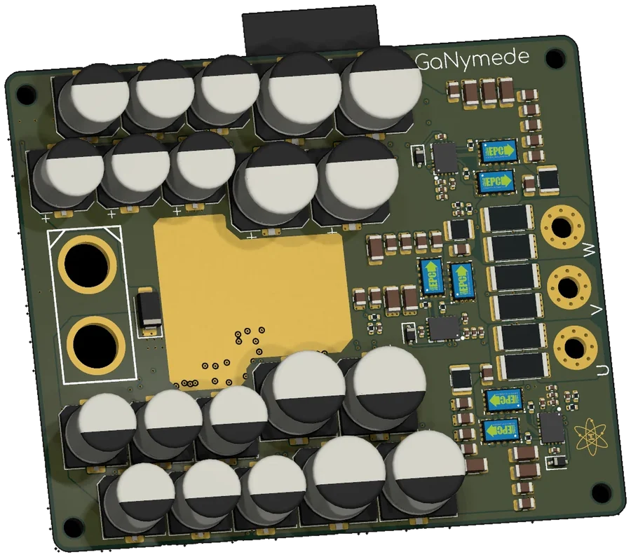

Work 02 Motor driver
GaN up front.
Ganymede on the back.
A VESC-compatible three-phase hub-motor driver on a 78 × 65 mm six-layer board. Six EPC2361 GaN FETs and a wrapped capacitor bank keep the power loop small; three-shunt sensing and a copper-inclusive loss model cover the less glamorous parts.

01The brief
GaNymede is a motor controller for a direct-drive hub motor, with a target of 50 A continuous and 100 A for one minute. Three-phase current and voltage sensing, Hall inputs, CAN and an ESP32-C3 for wireless telemetry are all on board.
Using the VESC pattern—STM32F405, existing firmware and tools—keeps the control side familiar. The GaN power stage, current sensing and thermal budget are where most of the design time went.
02Specification
| Bus voltage | up to 60 V DC |
|---|---|
| Phase current | 50 A continuous · 100 A peak (1 min) |
| Peak output | ≈ 5.2 kW at 100 A peak, m = 1, modelled |
| Topology | 3-phase inverter, 6× EPC2361 100 V eGaN |
| Switching | 20 kHz nominal (10–40 kHz analysed) |
| Gate drive | LMG1210, 5 V, 2.2 Ω |
| Current sense | 0.25 mΩ per phase · INA240A1, gain 20 |
| Control | STM32F405RGT6, 168 MHz, 8 MHz HSE |
| Wireless | ESP32-C3-WROOM-02 — Wi-Fi / BLE |
| CAN | 2× TJA1051TK-3 (STM32 + ESP32), shared bus |
| Bus capacitance | ≈ 1.4 mF, TVS protected (SMAJ60A) |
| PCB | 78 × 65 mm · 6 layers · 1.6 mm · 1 oz Cu |
03Key design decisions
The capacitor bank wraps around the bridge. It does not sit politely in a row. Wrapping the roughly 1.4 mF bank around the power stage uses the available board area and keeps the commutation loop short. Ceramic capacitors sit close to the switches; larger parts provide bulk storage.
Two shunts per phase. Two parallel 0.5 mΩ 2512 resistors make a 0.25 mΩ shunt, feeding an INA240A1 at a gain of 20. Sharing the current spreads the heat while keeping a useful measurement signal.
Dead time lives in firmware. The LMG1210 takes independent high- and low-side inputs, which fits the VESC control scheme. It also makes careful gate-signal checks essential during first power-up.
The copper is sized for the peak. Pours and via stitching account for the one-minute 100 A target, not just 50 A continuous. The 100 V FET rating leaves headroom over the 60 V bus, but real overshoot still needs a double-pulse test.
04What the loss model says
The copper, semiconductor and thermal model in LOSSES.md currently predicts about 29 W of loss and 99.4 % efficiency at 100 A peak, or 7.3 W and 99.7 % at 50 A continuous. Those are model outputs, not claims from a finished inverter.
It puts most of the loss in the phase shunts and 60 V/GND copper rather than the GaN devices. A 1.5–2 °C/W natural-convection heatsink should handle the modelled continuous load, while the one-minute peak leans mostly on thermal mass. If the bench disagrees, the bench wins.
05The back of the board
The back carries an engraving of Ganymede and the eagle. It does absolutely nothing for efficiency. It does make the back of the board much better.
06Where it stands
R1 exists as a completed schematic and six-layer layout, not a tested controller. Every current, power and thermal figure here is a target or model output. Gate checks, a double-pulse test and a thermal camera need to turn those targets into ratings.

